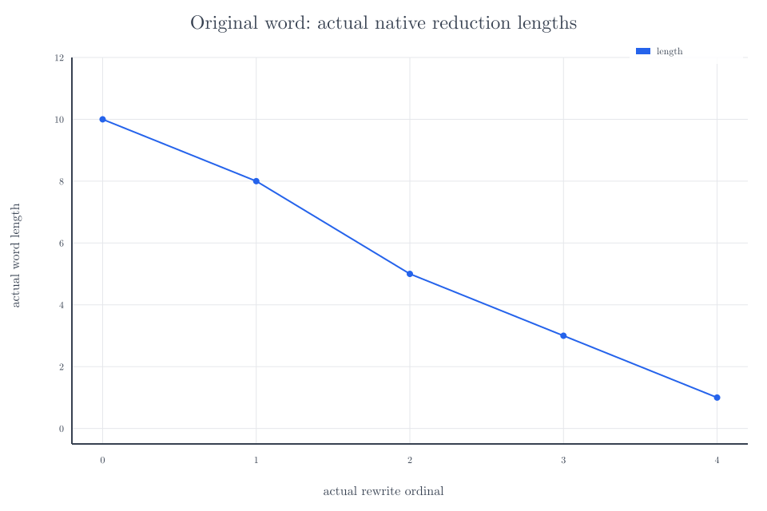
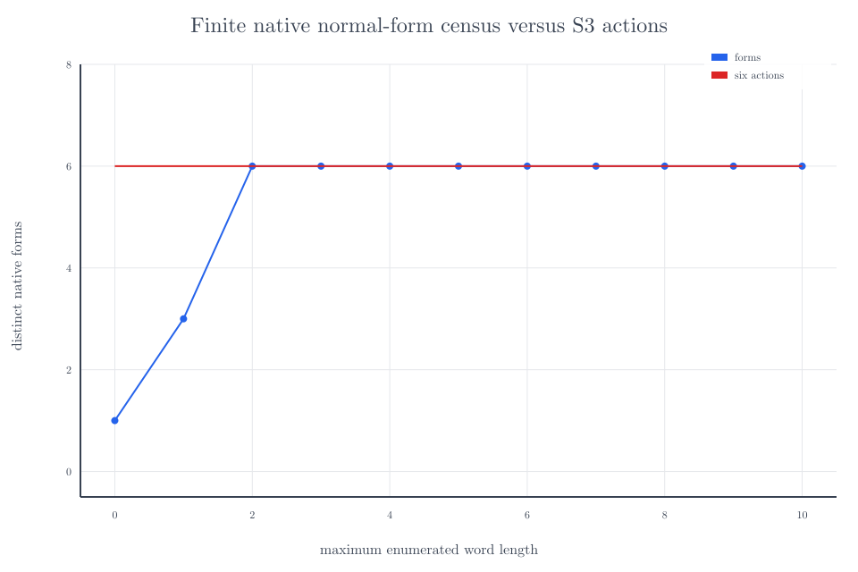
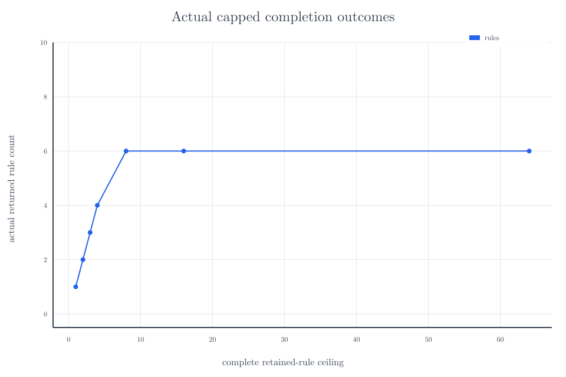

Knuth–Bendix completion and actual shortlex reductions
Abstract
A collection of word equations describes when different strings denote the same algebraic element, but direct substitution need not yield a unique representative. Knuth–Bendix completion tries to turn those equations into a terminating confluent rewrite system. We distinguish oriented reduction from confluence, begin with equal-length shortlex steps, retain the original S3 presentation and word, and compare its normal forms with an independent permutation model. A capped incomplete system does not decide inequality.
Termination is not the same as confluence
Orient each nontrivial byte-string equation from larger to smaller in shortlex: shorter words come first; words of equal length use std::string lexical order. This order is well founded on the finite byte alphabet and compatible with contexts. Every replacement strictly decreases shortlex, so a finite word cannot reduce forever. Word length is nonincreasing, but can stay constant during lexical decreases. The original report’s strictly shrinking-length picture is therefore not a general termination argument.
The reducer chooses the first applicable supplied rule, then its leftmost occurrence, repeating to irreducibility. A valid terminating system can still be nonconfluent, with a result depending on rule order. Completion interreduces rules and inspects overlaps: two lhs occurrences in the same word can give different immediate reducts. Disjoint occurrences commute; overlapping or contained occurrences form critical forks. If every fork joins and reduction terminates, local confluence extends to confluence, giving a unique representative. The native complete flag is set only after a full ordered overlap/containment scan adds no rule.
Equal-length steps you can inspect
The rule ba→ab sorts an a past a preceding b. Reducing bbaa takes four swaps while all words have length4. This supplies a hand-checkable example of strict lexical progress with constant length. The native trace captures every actual chosen rule, position and before/after word; it does not reproduce the algorithm in the report.
#include <dm/dm.hpp>
int main() {
std::filesystem::create_directories("build");
const auto t = dm::algorithms::kb_rewrite_trace("bbaa", {{"ba", "ab"}});
dm::graphics::Diagram d;
d.node("0", {0, 0}, t.start);
std::print(
"| actual step | rule identity | byte position | before | after | before length | after "
"length |\n| ---: | ---: | ---: | --- | --- | ---: | ---: |\n");
for (std::size_t i = 0; i < t.steps.size(); ++i) {
const auto& e = t.steps[i];
std::print(
"| {} | {} | {} | {} | {} | {} | {} |\n",
i + 1,
e.rule_index,
e.position,
e.before,
e.after,
e.before.size(),
e.after.size());
d.node(std::to_string(i + 1), {double(i + 1) * 5, 0}, e.after)
.edge(std::to_string(i), std::to_string(i + 1));
}
d.save_svg("build/knuth_bendix_shortlex.svg");
}| actual step | rule identity | byte position | before | after | before length | after length |
|---|---|---|---|---|---|---|
| 1 | 0 | 1 | bbaa | baba | 4 | 4 |
| 2 | 0 | 0 | baba | abba | 4 | 4 |
| 3 | 0 | 2 | abba | abab | 4 | 4 |
| 4 | 0 | 1 | abab | aabb | 4 | 4 |
The original S3 presentation and original word
Keep equations aa=e, bbb=e and abab=e, where e is the empty word. They present the permutation group S3: a is a transposition, b is a three-cycle, and ab is a transposition. The output below lists the actual completed rules and all actual reductions of the original word bbababbaab. A successful completion supplies the canonical-word argument; a finite enumeration alone does not prove group order or general confluence.
#include <dm/dm.hpp>
int main() {
std::filesystem::create_directories("build");
const auto c = dm::algorithms::knuth_bendix({{"aa", ""}, {"bbb", ""}, {"abab", ""}});
std::print("| actual rule identity | lhs | rhs, e means empty |\n| ---: | --- | --- |\n");
for (std::size_t i = 0; i < c.rules.size(); ++i)
std::print(
"| {} | {} | {} |\n", i, c.rules[i].lhs, c.rules[i].rhs.empty() ? "e" : c.rules[i].rhs);
std::print("\nComplete critical-pair scan {}; actual rules {}.\n", c.complete, c.rules.size());
const auto t = dm::algorithms::kb_rewrite_trace("bbababbaab", c.rules);
std::vector<double> x{0}, y{double(t.start.size())};
std::print(
"\n| actual rewrite | rule identity | byte position | actual word after, e means empty | "
"length |\n| ---: | ---: | ---: | --- | ---: |\n");
for (std::size_t i = 0; i < t.steps.size(); ++i) {
const auto& e = t.steps[i];
std::print(
"| {} | {} | {} | {} | {} |\n",
i + 1,
e.rule_index,
e.position,
e.after.empty() ? "e" : e.after,
e.after.size());
x.push_back(i + 1);
y.push_back(e.after.size());
}
auto p = dm::graphics::RPlot::create();
p.line(x, y, "length", {37, 99, 235}, 2)
.points(x, y, "", {37, 99, 235}, 4)
.y_limits(-.5, 12)
.title("Original word: actual native reduction lengths")
.x_label("actual rewrite ordinal")
.y_label("actual word length")
.save_svg("build/knuth_bendix_original.svg");
}| actual rule identity | lhs | rhs, e means empty |
|---|---|---|
| 0 | aa | e |
| 1 | bbb | e |
| 2 | bab | a |
| 3 | aba | bb |
| 4 | abb | ba |
| 5 | bba | ab |
Complete critical-pair scan true; actual rules 6.
| actual rewrite | rule identity | byte position | actual word after, e means empty | length |
|---|---|---|---|---|
| 1 | 0 | 7 | bbababbb | 8 |
| 2 | 1 | 5 | bbaba | 5 |
| 3 | 2 | 1 | baa | 3 |
| 4 | 0 | 1 | b | 1 |

Check the six representatives with a separate model
The report enumerates every word through length10 and compares its native normal form with an independently evaluated permutation on three symbols. Multiplication composes a=(01) and b=(012); this model does not call the rewriting algorithm. Matching permutation actions provide a sound independent check for these finite words. A complete-rule critical-pair certificate and the presentation’s group structure supply the broader uniqueness argument; the census alone cannot do so.
#include <dm/dm.hpp>
int main() {
std::filesystem::create_directories("build");
const auto c = dm::algorithms::knuth_bendix({{"aa", ""}, {"bbb", ""}, {"abab", ""}});
auto action = [](const std::string& w) {
std::array<int, 3> p{0, 1, 2};
for (char ch : w) {
const std::array<int, 3> g =
ch == 'a' ? std::array<int, 3>{1, 0, 2} : std::array<int, 3>{1, 2, 0};
auto old = p;
for (int i = 0; i < 3; ++i)
p[i] = old[g[i]];
}
return p;
};
std::map<std::array<int, 3>, std::string> canonical;
std::set<std::string> forms;
std::vector<double> x, y;
std::size_t checked = 0;
std::print(
"| maximum word length | cumulative actual words | distinct native forms | distinct "
"permutation actions | mismatches |\n| ---: | ---: | ---: | ---: | ---: |\n");
for (int n = 0; n <= 10; ++n) {
for (int bits = 0; bits < (1 << n); ++bits) {
std::string w;
for (int i = 0; i < n; ++i)
w += ((bits >> i) & 1) ? 'b' : 'a';
const auto f = dm::algorithms::kb_normal_form(w, c.rules);
const auto p = action(w);
if (action(f) != p || (canonical.contains(p) && canonical[p] != f))
throw std::runtime_error("independent permutation mismatch");
canonical[p] = f;
forms.insert(f);
++checked;
}
std::print("| {} | {} | {} | {} | 0 |\n", n, checked, forms.size(), canonical.size());
x.push_back(n);
y.push_back(forms.size());
}
auto p = dm::graphics::RPlot::create();
p.line(x, y, "forms", {37, 99, 235}, 2)
.points(x, y, "", {37, 99, 235}, 4)
.line({0, 10}, {6, 6}, "six actions", {220, 38, 38}, 2)
.y_limits(-.5, 8)
.title("Finite native normal-form census versus S3 actions")
.x_label("maximum enumerated word length")
.y_label("distinct native forms")
.save_svg("build/knuth_bendix_census.svg");
}| maximum word length | cumulative actual words | distinct native forms | distinct permutation actions | mismatches |
|---|---|---|---|---|
| 0 | 1 | 1 | 1 | 0 |
| 1 | 3 | 3 | 3 | 0 |
| 2 | 7 | 6 | 6 | 0 |
| 3 | 15 | 6 | 6 | 0 |
| 4 | 31 | 6 | 6 | 0 |
| 5 | 63 | 6 | 6 | 0 |
| 6 | 127 | 6 | 6 | 0 |
| 7 | 255 | 6 | 6 | 0 |
| 8 | 511 | 6 | 6 | 0 |
| 9 | 1023 | 6 | 6 | 0 |
| 10 | 2047 | 6 | 6 | 0 |

Caps and nonconfluence are explicit limits
The positive retained-rule ceiling is checked before adding both initial oriented equations and newly discovered critical equations. An initial cap can leave later input equations unprocessed. The fixed2000-round guard also returns complete=false. These are not limits on total fork bytes, reductions, elapsed time or peak memory. An incomplete result supplies only sound consequences of the processed equations: equal reductions imply equality, while unequal reductions need not imply inequality.
The controls compare several complete rule ceilings on the original presentation. A separate valid but nonconfluent pair ab→a, ab→b shows why deterministic first-rule reduction is not by itself canonical. Invalid empty-lhs, identity or increasing rules are rejected before reduction, including unused rules, rather than permitting an infinite unchecked loop.
#include <dm/dm.hpp>
int main() {
std::filesystem::create_directories("build");
std::vector<double> x, y;
std::print("| actual rule ceiling | returned rules | complete |\n| ---: | ---: | --- |\n");
for (int cap : {1, 2, 3, 4, 8, 16, 64}) {
const auto c = dm::algorithms::knuth_bendix({{"aa", ""}, {"bbb", ""}, {"abab", ""}}, cap);
std::print("| {} | {} | {} |\n", cap, c.rules.size(), c.complete);
x.push_back(cap);
y.push_back(c.rules.size());
}
std::print("\n| valid nonconfluent rule order | actual reduction of ab |\n| --- | --- |\n");
std::print(
"| ab to a first | {} |\n", dm::algorithms::kb_normal_form("ab", {{"ab", "a"}, {"ab", "b"}}));
std::print(
"| ab to b first | {} |\n", dm::algorithms::kb_normal_form("ab", {{"ab", "b"}, {"ab", "a"}}));
auto p = dm::graphics::RPlot::create();
p.line(x, y, "rules", {37, 99, 235}, 2)
.points(x, y, "", {37, 99, 235}, 4)
.y_limits(-.5, 10)
.title("Actual capped completion outcomes")
.x_label("complete retained-rule ceiling")
.y_label("actual returned rule count")
.save_svg("build/knuth_bendix_caps.svg");
}| actual rule ceiling | returned rules | complete |
|---|---|---|
| 1 | 1 | false |
| 2 | 2 | false |
| 3 | 3 | false |
| 4 | 4 | false |
| 8 | 6 | true |
| 16 | 6 | true |
| 64 | 6 | true |
| valid nonconfluent rule order | actual reduction of ab |
|---|---|
| ab to a first | a |
| ab to b first | b |

Scope and verification
Words and rules are arbitrary byte strings with identity represented by empty string. A caller-supplied reducer system must strictly decrease shortlex; this guarantees termination but not confluence. Complete input rules are checked before copies. Traces own the original word/rules and actual before/after values. The million-entry default counts one initial-word record, each rule and each application; zero disables only this optional quota. Full word bytes within records, private copies and capacities are excluded, so the quota does not bound peak memory. Each application is admitted before replacement and no partial trace escapes failure.
An independent permutation model verified all2047 words through length10 and7315 actual replacements for the original S3 presentation. Independently overlaid critical forks joined under the final rules, and actual steps respected first-rule/leftmost choice and strict shortlex descent. Frozen checks preserved2044 word reductions on four original completion systems. Native controls verify equal-length progress, nonconfluence, complete rule ceilings, invalid unused-rule rejection and ownership. The ten-report shared build passed141 native CTest cases,45 directly instrumented address/undefined-behaviour sanitizer cases,90 compiled/executed public examples,412/412 scoped file definitions plus11/11 changed lagged-Fibonacci engine definitions, and ten representative clangd hovers. All four complete report programs executed and all four native figures were visually reviewed. Receipts and repeatable checks are retained under build/mepml-conversion/batch-184-193/.
References
D. E. Knuth and P. B. Bendix(1970), Simple Word Problems in Universal Algebras, in Computational Problems in Abstract Algebra,263–297. This report specializes completion to finite byte strings, shortlex order and the actual native first-rule/leftmost strategy.